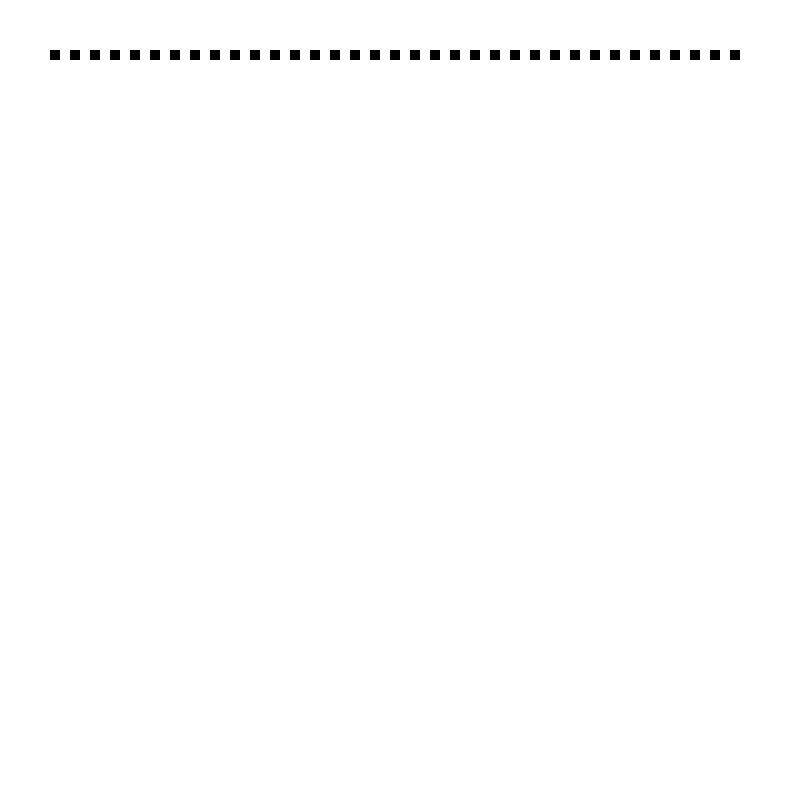
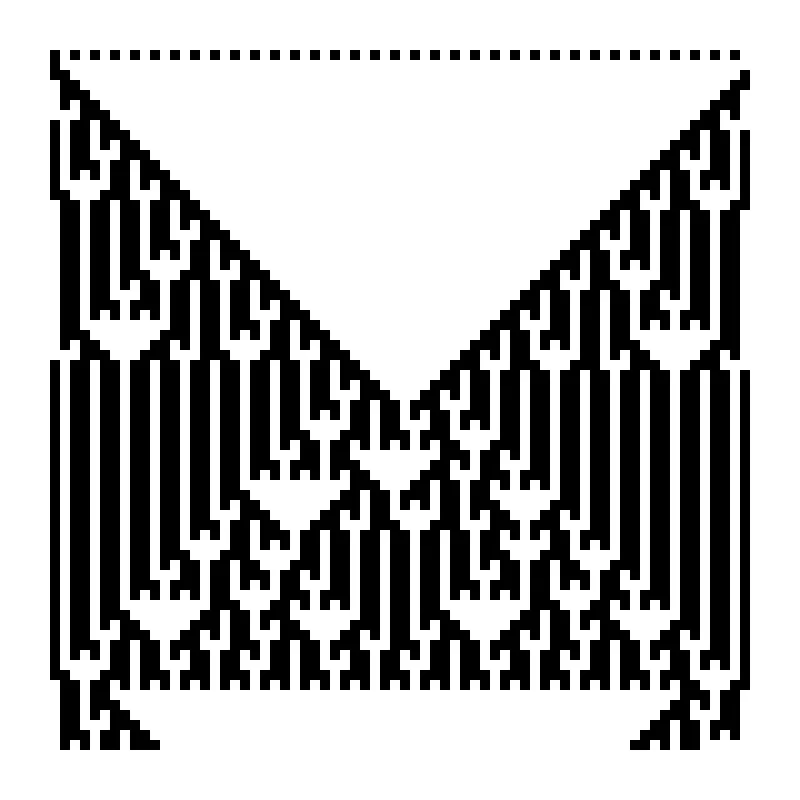
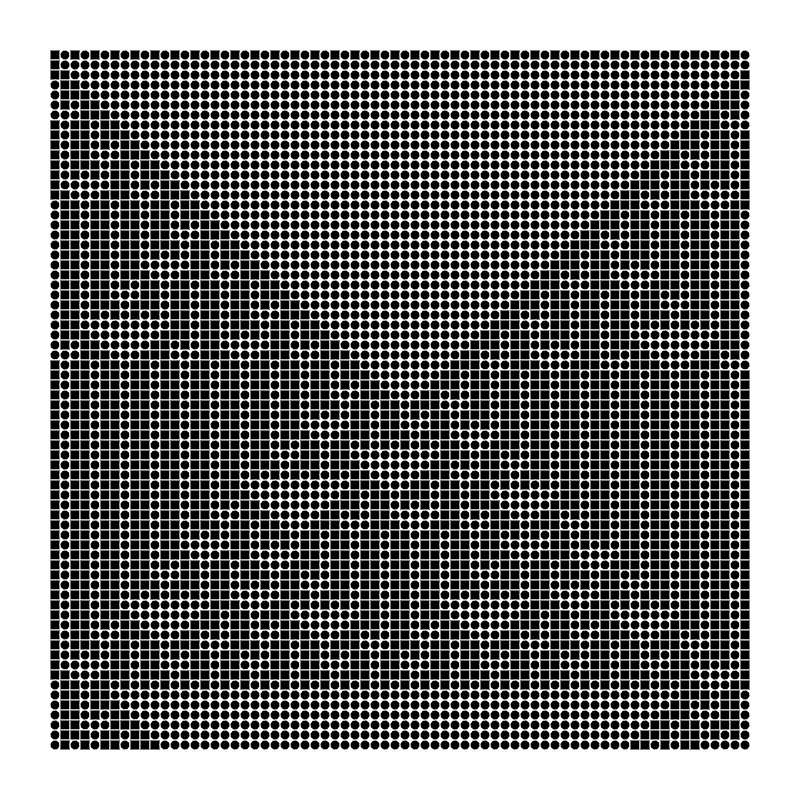
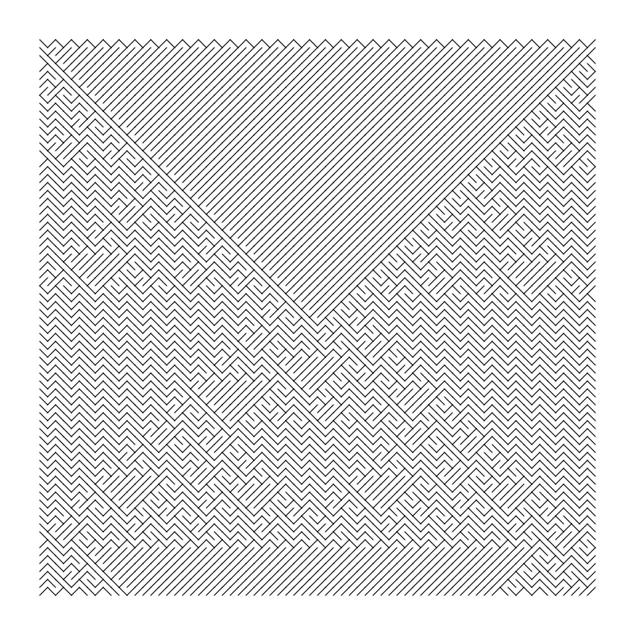
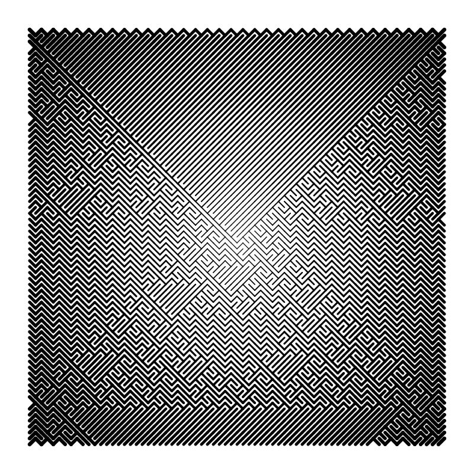
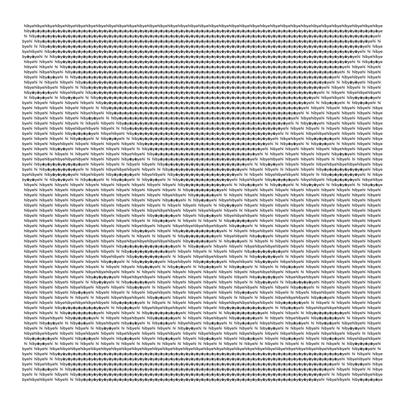
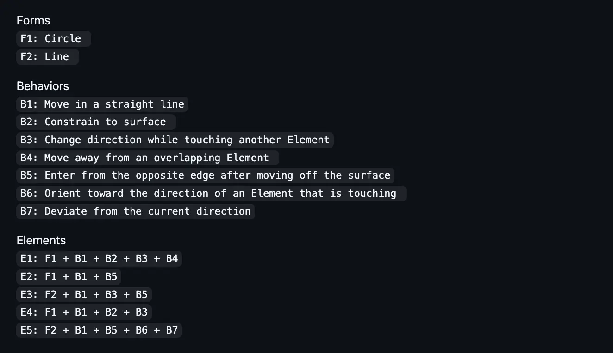

class: middle left # emergence study: .footnote[arjun;<br>august, 2026 @recurse-center.] --- class: middle center <figure> <img id = "white"src = "https://arjunmakesthings.github.io/itp-blog/z_images/Screenshot-2026-03-17-at-00.05.31.webp"> <figcaption>from the dynamics of complex systems, by yaneer-ban-yam.</figcaption> </figure> ??? in dynamics of complex systems, yaneer-bar-yam introduces the idea of emergent complexity: --- class: middle left ## a system composed of simple parts where the collective behaviour is complex. -- .grey[(the outcome can't be inferred solely by studying individual parts.)] --- class: middle <figure> <p></p> <figcaption>1-d cellular automata; from a new kind of science, by stephen wolfram.</figcaption> </figure> --- class: middle ``` js // define rule: const rule = { 0b111: 1, 0b110: 0, 0b101: 1, 0b100: 0, 0b011: 0, 0b010: 1, 0b001: 0, 0b000: 1, }; ``` <figcaption>rule-set. </figcaption> --- class: middle <figure> <p></p> <figcaption>1-d cellular automata; from a new kind of science, by stephen wolfram.</figcaption> </figure> --- class: middle <figure> <img id = "white" src = "https://www.wolframscience.com/nks/img/inline/page1186b.png"> <figcaption>1-d cellular automata ruleset; from <a href = "https://www.wolframscience.com/nks/notes-12-10--minimal-cellular-automata-for-sequences/" target = "_blank">wolframscience</a>.</figcaption> </figure> --- class: middle <figure> <figcaption>1-d cellular automata; from a new kind of science, by stephen wolfram.</figcaption> </figure> --- class: middle left ```js function draw_zero(x, y) { //can be whatever you want: } function draw_one(x, y) { //can be whatever you want: } ``` --- class: middle <figure> <p></p> <figcaption>1-d cellular automata; same-rules; interpretation-1.</figcaption> </figure> --- class: middle <figure> <p></p> <figcaption>1-d cellular automata; same-rules; interpretation-2.</figcaption> </figure> --- class: middle <figure> <p></p> <figcaption>1-d cellular automata; same-rules; interpretation-3.</figcaption> </figure> --- class: middle <figure> <p></p> <figcaption>1-d cellular automata; same-rules; interpretation-4.</figcaption> </figure> --- class: middle <figure> <div class = "two"> </div> <figcaption>same system; different interpretations.</figcaption> </figure> --- class: middle ## same underlying base-system, but different 'software-interpretations'. --- class: middle <figure> <p></p> <figcaption>process compendium ruleset, by casey reas.</figcaption> </figure> --- class: middle <figure> <img src = "https://www.bitforms.art/wp-content/uploads/2020/02/cr_process18_install_1_w-1170x585-1.jpg"> <figcaption>process-18, by casey-reas.</figcaption> </figure> --- class: middle <figure> <figcaption>process compendium ruleset, by casey reas.</figcaption> </figure> --- class: middle # base-system: --- class: middle ## there is a <mark>world</mark>, and it consists of many <mark>places</mark>. --- class: middle ## the world contains a <mark>population</mark> of <mark>beings</mark> — who are born, sustained, and killed over <mark>time</mark> by the world. --- class: middle ## the beings express life through <mark>movement</mark>, and movement is governed by a <mark>schedule</mark>. --- class: middle ## both the schedule & movement are governed by age (for eg: the closer you are to your 20s, the more likely you are to have a busier schedule (and thereby have to move more)). --- class: middle expression -> --- class: middle # software-interpretations: --- class: top ## software-interpretations are always written in english, and then realized by a constructed algorithm. each interpretation has the following: --- class: top ## .grey[software-interpretations are always written in english, and then realized by a constructed algorithm. each interpretation has the following:] ## - thought -> the core idea to express from the system. -- ## - expression -> technical details on extracting & representing relevant data from the system. -- ## - parameters: some software-interpretations may be computationally heavier than others. so, we may modify parameters of the system to realize them. --- # interpretation #2.0: missed connections: ### thought: we walk by so many people. when they are within a certain distance, we have a short window of time to connect with each other in physical-space, until we are distant again. ### expression: draw a line from each being to other beings around them within a specific radius, with the distance between them signifying the intensity of a possible connection. .grey[parameters: population: 1000, day_length: 10.] --- # interpretation #3.0: all the world's a mesh: ### thought: all beings are connected to each other via an invisible mesh. ### expression: treat the position of each being as a vertex. generate a triangular-mesh by finding tuples close to each other, so that no point is inside a face. keep generating the mesh over time, as beings move. .grey[parameters: population: 1000, day_length: 5.] --- # interpretation #4.1: meetings are ripples: ### thought: meeting people can be resounding. when two beings meet, a ripple is sent through in space & time; that may affect other beings. ### expression: connect beings close to each other with a black line. when two beings collide, send out a circular ripple expanding from the point of collision. the closer the beings are, the further the ripple goes. lay this out over time. .grey[parameters: population: 1000, day_length: 5.] --- class: middle ## [emergence study](https://github.com/arjunmakesthings/daily-movement_emergence-studies); august 2026 @recurse-center. .footnote[by [arjun](https://arjunmakesthings.github.io/).]